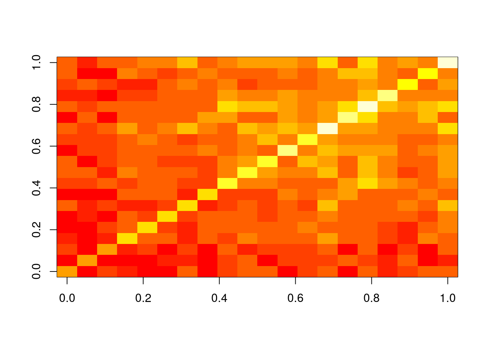

Exercise 1
for loop
Task 1.1: Compute the mean of each row in myMA by applying the mean function in a for loop.
myMA <- matrix(rnorm(500), 100, 5, dimnames=list(1:100, paste("C", 1:5, sep="")))
myve_for <- NULL
for(i in seq(along=myMA[,1])) {
myve_for <- c(myve_for, mean(as.numeric(myMA[i, ])))
}
myResult <- cbind(myMA, mean_for=myve_for)
myResult[1:4, ]
## C1 C2 C3 C4 C5 mean_for
## 1 0.4536495 0.54613021 0.1253216 -1.3020534 0.430709810 0.05075154
## 2 -0.9886738 -0.91961383 -0.5126274 -0.5070886 -0.009307497 -0.58746222
## 3 -0.8999119 0.02444787 -1.2912225 0.6391948 0.735991982 -0.15829997
## 4 0.7830007 -0.88817232 1.8737169 -0.6637287 -0.187648576 0.18343360
while loop
Task 1.2: Compute the mean of each row in myMA by applying the mean function in a while loop.
z <- 1
myve_while <- NULL
while(z <= length(myMA[,1])) {
myve_while <- c(myve_while, mean(as.numeric(myMA[z, ])))
z <- z + 1
}
myResult <- cbind(myMA, mean_for=myve_for, mean_while=myve_while)
myResult[1:4, -c(1,2)]
## C3 C4 C5 mean_for mean_while
## 1 0.1253216 -1.3020534 0.430709810 0.05075154 0.05075154
## 2 -0.5126274 -0.5070886 -0.009307497 -0.58746222 -0.58746222
## 3 -1.2912225 0.6391948 0.735991982 -0.15829997 -0.15829997
## 4 1.8737169 -0.6637287 -0.187648576 0.18343360 0.18343360
Task 1.3: Confirm that the results from both mean calculations are identical
all(myResult[,6] == myResult[,7])
## [1] TRUE
apply loop
Task 1.4: Compute the mean of each row in myMA by applying the mean function in an apply loop
myve_apply <- apply(myMA, 1, mean)
myResult <- cbind(myMA, mean_for=myve_for, mean_while=myve_while, mean_apply=myve_apply)
myResult[1:4, -c(1,2)]
## C3 C4 C5 mean_for mean_while mean_apply
## 1 0.1253216 -1.3020534 0.430709810 0.05075154 0.05075154 0.05075154
## 2 -0.5126274 -0.5070886 -0.009307497 -0.58746222 -0.58746222 -0.58746222
## 3 -1.2912225 0.6391948 0.735991982 -0.15829997 -0.15829997 -0.15829997
## 4 1.8737169 -0.6637287 -0.187648576 0.18343360 0.18343360 0.18343360
Avoiding loops
Task 1.5: When operating on large data sets it is much faster to use the rowMeans function
mymean <- rowMeans(myMA)
myResult <- cbind(myMA, mean_for=myve_for, mean_while=myve_while, mean_apply=myve_apply, mean_int=mymean)
myResult[1:4, -c(1,2,3)]
## C4 C5 mean_for mean_while mean_apply mean_int
## 1 -1.3020534 0.430709810 0.05075154 0.05075154 0.05075154 0.05075154
## 2 -0.5070886 -0.009307497 -0.58746222 -0.58746222 -0.58746222 -0.58746222
## 3 0.6391948 0.735991982 -0.15829997 -0.15829997 -0.15829997 -0.15829997
## 4 -0.6637287 -0.187648576 0.18343360 0.18343360 0.18343360 0.18343360
Exercise 2
Custom functions
Task 2.1: Use the following code as basis to implement a function that allows the user to compute the mean for any combination of columns in a matrix or data frame. The first argument of this function should specify the input data set, the second the mathematical function to be passed on (e.g. mean, sd, max) and the third one should allow the selection of the columns by providing a grouping vector.
myMA <- matrix(rnorm(100000), 10000, 10, dimnames=list(1:10000, paste("C", 1:10, sep="")))
myMA[1:2,]
## C1 C2 C3 C4 C5 C6 C7 C8 C9
## 1 0.4507052 -0.05805533 0.827162639 0.5931234 -0.1545470 1.584974 -0.9211220 1.590691 0.3856658
## 2 -1.1498529 -0.87379147 0.007801882 0.8321491 0.1052798 1.052000 0.5948353 -2.533550 1.6726565
## C10
## 1 -0.1622756
## 2 -0.4667917
myList <- tapply(colnames(myMA), c(1,1,1,2,2,2,3,3,4,4), list)
names(myList) <- sapply(myList, paste, collapse="_")
myMAmean <- sapply(myList, function(x) apply(myMA[,x], 1, mean))
myMAmean[1:4,]
## C1_C2_C3 C4_C5_C6 C7_C8 C9_C10
## 1 0.40660418 0.67451684 0.3347842 0.1116951
## 2 -0.67194751 0.66314291 -0.9693576 0.6029324
## 3 0.47389228 0.04264877 0.6147670 -1.5728369
## 4 0.02253055 -0.30530997 0.2091151 0.2384014
Exercise 3
Nested loops to generate similarity matrices
Task 3.1: Create a sample list populated with character vectors of different lengths
setlist <- lapply(11:30, function(x) sample(letters, x, replace=TRUE))
names(setlist) <- paste("S", seq(along=setlist), sep="")
setlist[1:6]
## $S1
## [1] "q" "p" "x" "m" "h" "z" "i" "l" "j" "i" "u"
##
## $S2
## [1] "t" "q" "w" "a" "z" "s" "b" "w" "b" "m" "g" "i"
##
## $S3
## [1] "u" "s" "m" "p" "y" "l" "m" "u" "k" "z" "r" "h" "k"
##
## $S4
## [1] "e" "o" "j" "n" "f" "y" "d" "l" "z" "d" "y" "m" "u" "w"
##
## $S5
## [1] "k" "a" "o" "m" "n" "f" "y" "n" "p" "v" "w" "u" "l" "w" "m"
##
## $S6
## [1] "u" "w" "j" "f" "r" "g" "m" "c" "i" "w" "t" "n" "k" "e" "n" "n"
Task 3.2: Compute the length for all pairwise intersects of the vectors stored in setlist. The intersects can be determined with the %in% function like this: sum(setlist[[1]] %in% setlist[[2]])
setlist <- sapply(setlist, unique)
olMA <- sapply(names(setlist), function(x) sapply(names(setlist),
function(y) sum(setlist[[x]] %in% setlist[[y]])))
olMA[1:12,]
## S1 S2 S3 S4 S5 S6 S7 S8 S9 S10 S11 S12 S13 S14 S15 S16 S17 S18 S19 S20
## S1 10 4 6 5 4 4 7 3 6 7 7 4 6 7 4 7 5 6 7 7
## S2 4 10 3 3 3 5 5 3 6 7 4 6 6 6 7 6 5 7 3 5
## S3 6 3 10 5 6 4 6 4 7 5 6 6 6 7 4 7 4 6 4 8
## S4 5 3 5 12 8 7 5 8 6 9 7 8 8 10 8 8 6 5 9 8
## S5 4 3 6 8 12 6 5 8 7 7 8 8 9 8 7 8 6 5 8 9
## S6 4 5 4 7 6 13 6 8 8 7 6 7 8 9 8 8 8 7 6 9
## S7 7 5 6 5 5 6 13 5 6 7 6 8 6 11 7 8 7 9 7 11
## S8 3 3 4 8 8 8 5 12 6 6 6 9 8 9 10 7 7 7 9 8
## S9 6 6 7 6 7 8 6 6 15 9 9 7 8 8 10 13 10 9 8 9
## S10 7 7 5 9 7 7 7 6 9 15 10 9 9 11 8 11 9 6 8 10
## S11 7 4 6 7 8 6 6 6 9 10 15 8 11 10 8 11 9 7 8 10
## S12 4 6 6 8 8 7 8 9 7 9 8 16 9 11 10 10 10 8 9 10
Task 3.3 Plot the resulting intersect matrix as heat map. The image or the heatmap.2 function from the gplots library can be used for this.
image(olMA)

Exercise 4
Build your own R package
Task 4.1: Save one or more of your functions to a file called script.R and build the package with the package.skeleton function.
package.skeleton(name="mypackage", code_files=c("script1.R"))
Task 4.2: Build tarball of the package
system("R CMD build mypackage")
Task 4.3: Install and use package
install.packages("mypackage_1.0.tar.gz", repos=NULL, type="source")
library(mypackage)
?myMAcomp # Opens help for function defined by mypackage